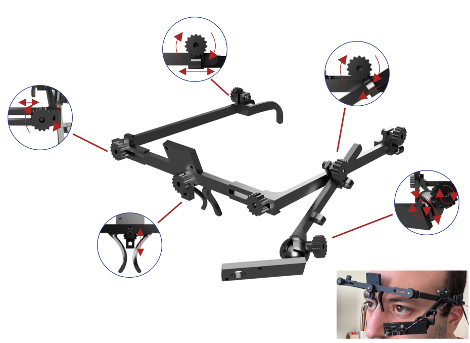
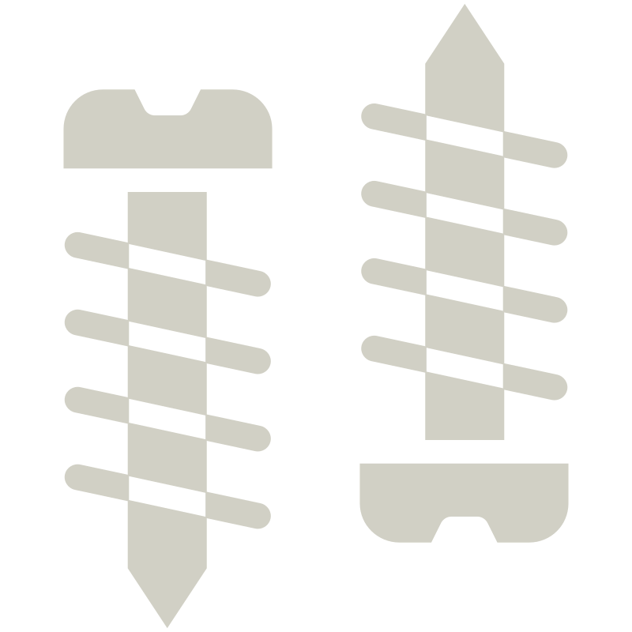
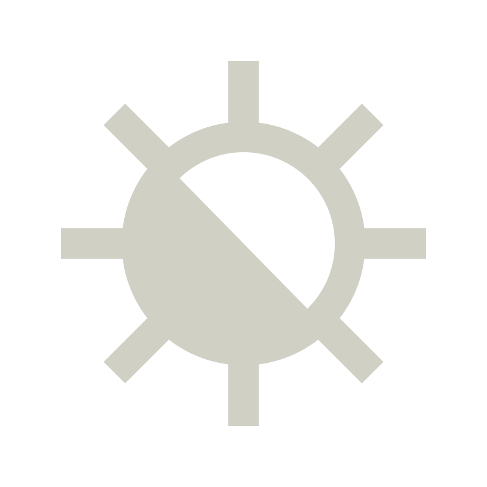
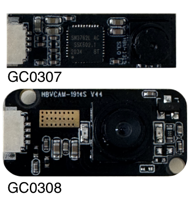

Hardware architecture and physical design.
Using MEYELens is easy. Follow these steps to build your complete 3D-printed platform for pupillometry and eye tracking.
Overview
The hardware is centered on a 3D-printed wearable frame that can support one or more camera modules while allowing positional adjustment relative to the eye. The design emphasizes reproducibility, low cost, and practical adaptability across different users and experimental contexts.
The frame includes support elements for the front structure, nose positioning, side arms, and camera mounting. Depending on the intended use, the system can be assembled in simpler or more extended configurations, ranging from monocular pupil recording to combined eye-facing and world-facing acquisition.
Printing

Assembling

Testing

Bill of materials
List of all components required to build the eyewear platform.
| Preview | Component | Description | Quantity | Notes | Price per Unit(€) | Link |
|---|---|---|---|---|---|---|
| Printing filament | PLA or TPU | 1 | 3D-printed | 1.43 | Open | |
| Eye-facing camera | Primary recording camera | 1 | Required | 7.19-14.38 | Open | |
| World-facing camera | Scene camera for gaze mapping | 1 | Optional | 7.19-14.38 | Open | |
|
 |
Fasteners | M3 and M2 screws and nuts | Multiple | Required | 1.23 | Open |
|
 |
IR illumination | External LED source | 1 | Depends on the setup | 41.2 | Open |
Fasteners
Standard fasteners are required to assemble the MEYELens frame and secure the camera module.
Assembly uses mostly standard screws and nuts. Make sure these parts are available before starting the build.
-
M3 × 16 mm screws ×3
Frame joints. -
M3 × 12 mm screws ×4
Ear supports, camera arm, and ball joint. -
M3 nuts ×6
Used for all M3 screws except the ball-bearing anchor, as in our build. -
M2 × 10 mm screws + M2 nuts
Camera mounting.
Camera(s)
MEYELens can be assembled with one or two camera modules depending on the intended application.
The platform supports:
- Single camera: pupillometry, optionally combined with chin-rest gaze tracking.
- Dual camera: eye-facing and world-facing cameras for naturalistic gaze tracking.
Tested camera modules:
- GC0307 - 640 × 480 px, nominal 30 Hz. The IR-cut filter was removed and the camera was used with an external 96-LED infrared illuminator.
- GC0308 - 640 × 480 px, nominal 30 Hz, with built-in IR LEDs. We used a 50° lens for the eye-facing camera and an 80° lens for the world-facing camera.
